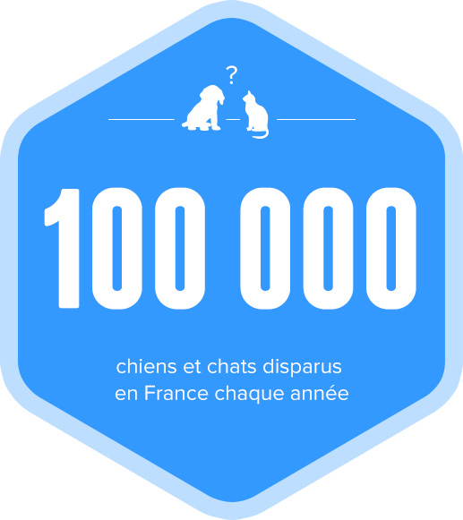
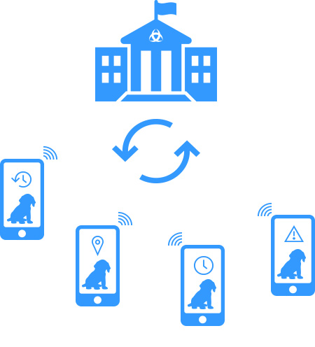

Résoudre un problème récurrent du monde animalier :
On assiste chaque année à la disparition de 100 000 chiens/chats et il n’existe à ce jour pas de solutions efficaces et abordables pour résoudre ce problème (seuls les colliers GPS offrent une réponse à ce problème mais leur prix est élevé).
Répondre aux attentes de la communauté :
Nos études démontrent que notre plateforme communautaire Yummypets est un prétexte à la rencontre pour la communauté. Nous souhaitons donc proposer un produit/service qui facilite ces échanges et mette ces personnes en relation.

Fournir de la data qualitative à la ville et aux associations :
Les données récoltées grâce au dispositif NFC sont des données ultra ciblées qui peuvent être exploitées (heures de passage des animaux dans les lieux publics, lieux fréquentés, lieux où les animaux perdus sont retrouvés, le temps passé perdu....).